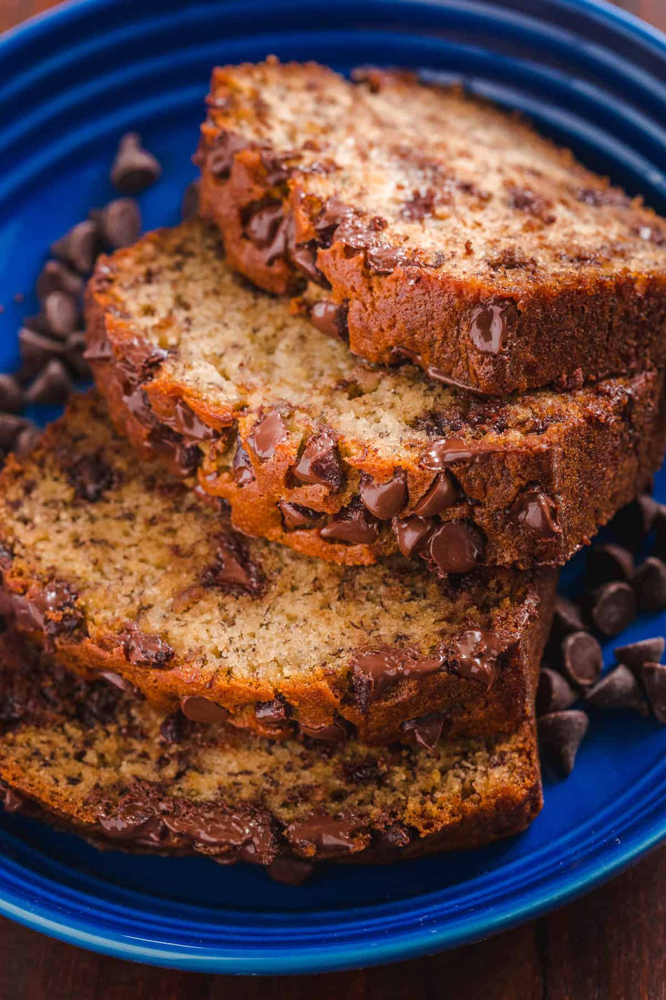

Banana Bread

Description
This is the chocolate chip banana bread recipe that my brother, Kevin, sent to me. It is phenomenal.
Ingredients
- 1/2 cup unsalted butter, (8 Tbsp), softened
- 2/3 cup granulated sugar
- 2 large eggs, room temperature
- 4 bananas, (very ripe)
- 1/2 tsp vanilla extract
- 1 1/2 cups all-purpose flour
- 1 tsp baking soda
- 1/2 tsp salt
- 1 cup semisweet chocolate chips, divided
Steps
- Preheat Oven to 350˚F. Butter and flour a bread loaf pan (9.25"L x 5.25"W x 2.75"D)
- In a mixing bowl using paddle attachment, cream together 1/2 cup softened butter and 2/3 cup sugar. Add 2 lightly beaten eggs.
- Mash bananas with a fork until consistency of chunky applesauce and add them to the mixing bowl along with 1/2 tsp vanilla extract. Mix until blended.
- In a separate bowl, whisk together dry ingredients: 1 1/2 cups flour, 1 tsp baking soda and 1/2 tsp salt. Add to mixing bowl and mix until incorporated.
- Fold in 3/4 cup chocolate chips then transfer to prepared bread pan. Sprinkle remaining 1/4 cup chocolate over the top and bake at 350˚F for 55-65 minutes or until a toothpick inserted into the center comes out clean. Let banana bread rest 10 min before transferring to a wire rack to cool.